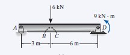
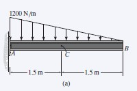
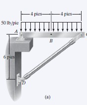

Unidad 6: Análisis de estructuras estáticamente determinadas
Vigas, armaduras, método de nudos y secciones, mecanismos y cables.
Contenido de la unidad
6.1 Vigas (p330)
A continuación se presenta un resumen técnico y profesional sobre el estudio de las vigas en la ingeniería mecánica, estructurado a partir de los principios de la estática y el análisis estructural.
1. Definición y función estructural
Las vigas se definen como elementos estructurales diseñados para soportar cargas aplicadas de manera perpendicular a sus ejes. En el ámbito de la mecánica de cuerpos rígidos, el estudio de las vigas se centra en el estado de equilibrio, donde las fuerzas aplicadas no producen movimiento acelerado.
Para un análisis técnico preciso, los ingenieros suelen emplear modelos idealizados. En estos modelos, se asume que materiales como el acero son rígidos, despreciando deflexiones mínimas para simplificar el cálculo de las fuerzas actuantes.
2. Clasificación según apoyos y cargas
La respuesta de una viga depende fundamentalmente de su configuración de soporte. Las clasificaciones comunes incluyen:
- Simplemente apoyadas: articuladas en un extremo y sobre un rodillo en el otro.
- En voladizo (cantilever): fijadas o empotradas en un solo extremo.
- Con voladizo: aquellas cuyos extremos se extienden más allá de los soportes.
- Vigas compuestas y vigas Gerber: estructuras formadas por varios segmentos conectados internamente.
3. Cargas internas y convención de signos
Al someterse a cargas externas, se desarrollan tres tipos de cargas resultantes internas en la sección transversal del elemento:
- Fuerza normal (N): actúa perpendicular a la sección transversal. Se considera positiva si genera tensión.
- Fuerza cortante (V): actúa de forma tangencial a la sección. Es positiva si tiende a hacer girar el segmento en el sentido de las manecillas del reloj.
- Momento flexionante (M): tiende a doblar el elemento. Se define como positivo cuando dobla el segmento de forma cóncava hacia arriba (compresión en la parte superior y tensión en la inferior).
4. Análisis mediante diagramas de control
Para el diseño seguro de una viga, es imperativo conocer la variación de V y M a lo largo de toda su longitud. Esto se logra mediante el método de secciones, seccionando la viga a una distancia arbitraria x para formular ecuaciones de equilibrio.
5. Propiedades geométricas relevantes
El comportamiento de una viga bajo carga también depende de la geometría de su sección transversal:
- Centroide: es el centro geométrico del área donde se considera que actúan las fuerzas resultantes.
- Momento de inercia (I): propiedad necesaria para predecir la resistencia y la deflexión de la viga ante la flexión.
- Módulo de sección: concepto abstracto derivado de la geometría de la sección plana con aplicación directa en el cálculo de esfuerzos.

Cargas internas
Si un sistema coplanar de fuerzas actúa sobre un elemento, entonces en general actuarán una fuerza normal interna N, una fuerza cortante V y un momento flexionante M que resultan en cualquier sección transversal a lo largo del elemento. En la figura se muestran las direcciones positivas de estas cargas.

La fuerza normal interna, la fuerza cortante y el momento flexionante que resultan se determinan por el método de secciones. Para encontrarlas, el elemento se secciona en el punto C donde se debe determinar la carga interna. Luego se traza un diagrama de cuerpo libre de una de las partes seccionadas y las cargas internas se muestran en sus direcciones positivas.

La fuerza normal se determina al sumar las fuerzas normales a la sección transversal. La fuerza cortante que resulta se encuentra al sumar las fuerzas tangentes a la sección transversal, y el momento flexionante se encuentra por la suma de momentos con respecto al centro geométrico o centroide del área de la sección transversal.

Si el elemento está sometido a una carga tridimensional, entonces, en general, un momento de torsión también actuará sobre la sección transversal. Esta carga se puede determinar por la suma de momentos con respecto a un eje perpendicular a la sección transversal que pasa por su centroide.

Diagramas de fuerza cortante y de momento flexionante
Para construir los diagramas de fuerza cortante y de momento flexionante para un elemento, es necesario seccionar el elemento en un punto arbitrario, localizado a una distancia x del extremo izquierdo.

Si la carga externa consta de cambios en la carga distribuida, o sobre el elemento actúa una serie de cargas concentradas y momentos de par, entonces deben determinarse diferentes expresiones para V y M dentro de las regiones entre cualesquier discontinuidades de carga.
La fuerza cortante y el momento de par desconocidos se indican sobre la sección transversal en la dirección positiva de acuerdo con la convención de signos establecida, y después se determinan la fuerza cortante interna y el momento flexionante como funciones de x.
Entonces se grafica cada una de las funciones de la fuerza cortante y del momento flexionante para crear los diagramas de fuerza cortante y de momento flexionante.


Ejercicio 6.1
Determine la fuerza normal, la fuerza cortante y el momento flexionante que actúan justo a la izquierda, punto B, y justo a la derecha, punto C, de la fuerza de 6 kN aplicada sobre la viga de la figura.

Ejercicio 6.1.2
Determine la fuerza normal, la fuerza cortante y el momento flexionante en el punto C de la viga que se muestra en la figura.

Ejercicio 6.1.3
Determine la fuerza normal, la fuerza cortante y el momento flexionante que actúan en el punto B de la estructura de dos elementos que se muestra en la figura.

6.2 Armaduras
Las armaduras son estructuras articuladas formadas por barras conectadas en nudos. Idealmente, cada barra trabaja con fuerzas axiales (tensión o compresión).
6.2.1 Método de nudos
Consiste en aislar un nudo donde actúan fuerzas conocidas y algunas fuerzas de barras desconocidas, y aplicar equilibrio de fuerzas en x e y.
Estrategia: elige nudos con el menor número de incógnitas (por ejemplo, nudos conectados a dos barras) para resolver primero.
6.2.2 Método de secciones
Secciona la armadura mediante un corte que atraviesa varias barras. Al considerar una sola “mitad” del sistema, se aplican momentos para eliminar incógnitas no deseadas y resolver las barras cortadas.
Regla práctica: usa un punto de giro en el momento para anular fuerzas de barras que no quieres calcular.
6.3 Mecanismos
Un mecanismo es un sistema con movilidad: parte de la energía del sistema se transforma en movimiento debido a la geometría y restricciones. En estática, se analiza la posibilidad de movimiento usando criterios de determinación y equilibrio.
6.4 Cables
Los cables transmiten fuerzas principalmente por tensión. El análisis considera la forma de la catenaria o, para cargas simplificadas, el comportamiento equivalente en equilibrio.
En la práctica se estudian componentes de tensión y reacciones en los apoyos, vinculadas al diagrama de cuerpo libre.